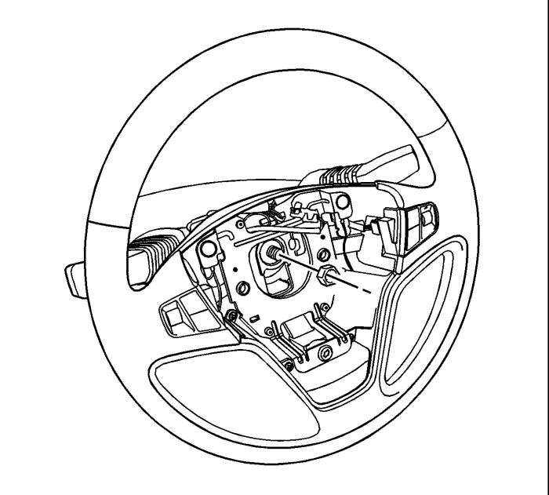
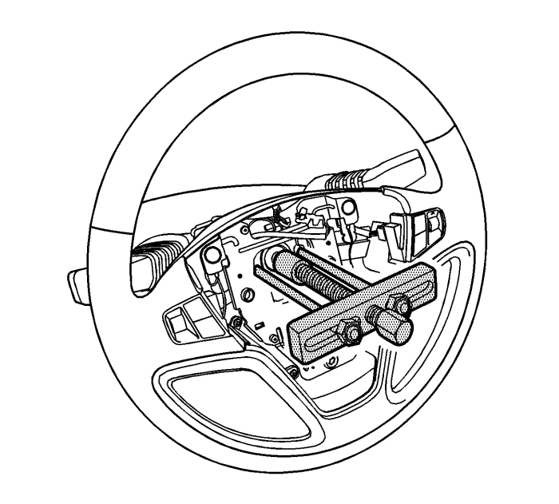

Sustitución del volante — Carrocería corta
Herramientas especiales
KM-210-B Extractor del volante
Procedimiento de desmontaje
- Coloque el volante en la posición más derecha posible.
Advertencia : El módulo de diagnóstico y percepción (SDM) puede mantener una tensión suficiente para activar los airbags y pretensores hasta 1 minuto después de haber desconectado el encendido y haber retirado el fusible. Si los airbags y pretensores no están desconectados, no empiece a realizar el servicio hasta que haya pasado un minuto desde la desconexión de la alimentación al SDM. De lo contrario se podrían producir lesiones personales.
- Desconecte el cable negativo de la batería y deje el vehículo en reposo durante 1 minuto. Consultar Desconexión y conexión del cable negativo de la batería .
- Desmonte el módulo SIR. Consultar Sustitución del módulo de la sujeción inflable del volante .

- Quite la tuerca del volante.
- Utilice pintura para realizar marcas de alineación en el eje de la columna de dirección y en el volante.

- Desmonte el volante utilizando el extractor KM-210-B.
Procedimiento de montaje
- Alinee las marcas del volante y del eje de la columna de la dirección. Gire la leva de cancelación de la señal del volante hacia la izquierda.
- Monte el volante.
Precaución: Consulte Precaución con las fijaciones en la sección Prólogo
- Monte la tuerca del volante y apriétela a un par de 41 N·m (30 lb. pie).
- Monte el módulo SIR. Consulte Sustitución del módulo de la sujeción inflable del volante .
- Conecte el cable negativo de la batería. Consultar Desconexión y conexión del cable negativo de la batería .
| © Copyright Chevrolet Europe. All rights reserved |